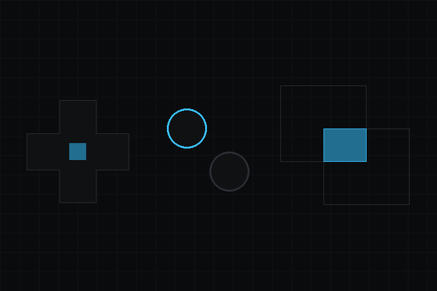

- 다음에 의해 생성됨 :
 1.18.0
1.18.0
|
deki-input 0.40.0
Deki 패키지 레퍼런스
|

입력 디스패치와 충돌 감지. 포인터 / 터치 / 키 이벤트를 관심 있는 컴포넌트에 전달하고, 아날로그 스틱이 가리키는 방향을 읽습니다.
저장소: github.com/dekiengine/deki-input · 최신 릴리스: 0.40.0 · 엔진 0.40.0 이상 필요
DekiEditor --packages-add deki-input <project> 또는 패키지 관리자로 설치합니다. 엔진 자체의 컴포넌트와 C++ API는 Deki 문서에 있습니다.
에디터에는 Input(으)로 표시됩니다.
| 컴포넌트 | 카테고리 | 설명 |
|---|---|---|
| I2CKeyboardComponent | 입력 | I2C로 한 번 읽을 때마다 입력된 문자 하나를 넘겨주는 키보드를 읽습니다. LilyGO T-Deck의 키보드와 M5Stack CardKB가 여기에 해당합니다. |
| InputCollider | 입력 | 포인터와 터치용 히트 영역입니다. 버튼과 스크롤이 이 영역의 입력을 받습니다. |
| TrackballComponent | 입력 | GPIO 핀에 연결된 트랙볼을 방향키와 Enter 또는 포인터로 사용합니다. |
빌드에서 뺄 수 있는 부분입니다. define이 있는 기능은 그 define으로 켜고 끄며, 나머지는 컴포넌트와 함께 제거됩니다.
| 기능 | define | 기본값 |
|---|---|---|
| Colliders | DEKI_FEATURE_INPUT | 켜짐 |
| I2C Keyboard | DEKI_FEATURE_INPUT_I2C_KEYBOARD | 켜짐 |
| Trackball | DEKI_FEATURE_INPUT_TRACKBALL | 켜짐 |
I2C로 한 번 읽을 때마다 입력된 문자 하나를 넘겨주는 키보드를 읽습니다. LilyGO T-Deck의 키보드와 M5Stack CardKB가 여기에 해당합니다.
인스펙터 이름: I2C 키보드 · 카테고리: 입력 · 유형: DekiInput::I2CKeyboardComponent
| 속성 | 유형 | 기본값 | 제약 | 설명 |
|---|---|---|---|---|
| i2cPort | int32 | 0 | 0~3 | 키보드가 연결된 I2C 버스입니다. 해당 포트를 설정한 I2C Bus 컴포넌트와 일치해야 합니다. |
| i2cAddress | int32 | 85 | 0~127 | 버스에서 키보드의 주소입니다. LilyGO T-Deck은 0x55(85), M5Stack CardKB는 0x5F(95)입니다. |
| hasBacklight | bool | false | 키보드에 자체 제어하는 백라이트가 있으며 버스를 통해 설정합니다(LilyGO T-Deck은 레지스터 0x01의 밝기). 게임 코드에서는 I2CKeyboard::SetBacklight로 설정합니다. | |
| reportHeldKeys | bool | false | LilyGO T-Deck의 키보드: 키 매트릭스 전체를 읽어, 데스크톱 키보드처럼 키를 누르고 있는 동안 계속 눌린 상태가 됩니다. 그러면 게임에서 키를 누르고 있는 동안 걷게 할 수 있습니다. 매트릭스 모드(register 0x03)가 있는 키보드 펌웨어가 필요합니다. 끄면 입력한 키는 한 프레임 동안만 눌린 상태가 됩니다. |
포인터와 터치용 히트 영역입니다. 버튼과 스크롤이 이 영역의 입력을 받습니다.
인스펙터 이름: 입력 콜라이더 · 카테고리: 입력 · 유형: DekiInput::InputCollider
| 속성 | 유형 | 기본값 | 제약 | 설명 |
|---|---|---|---|---|
| width | float | 0 | 단위 m | 히트 영역의 너비(미터)입니다. 그려진 것과 일치할 필요는 없습니다. |
| height | float | 0 | 단위 m | 히트 영역의 높이(미터)입니다. |
| paddingLeft | float | 0 | 단위 m | 왼쪽 가장자리 바깥으로 넓힐 히트 영역(미터)입니다. 작은 컨트롤을 더 크게 보이지 않게 하면서 손가락으로 누르기 편하게 만들 때 유용합니다. |
| paddingRight | float | 0 | 단위 m | 오른쪽 가장자리 바깥으로 넓힐 히트 영역(미터)입니다. |
| paddingTop | float | 0 | 단위 m | 위쪽 가장자리 위로 넓힐 히트 영역(미터)입니다. |
| paddingBottom | float | 0 | 단위 m | 아래쪽 가장자리 아래로 넓힐 히트 영역(미터)입니다. |
| consumeInput | bool | true | 누르기를 여기서 멈추어 아래에 있는 오브젝트에 전달되지 않게 합니다. 뒤에 있는 것을 막지 않아야 하는 오버레이에서는 끄세요. |
GPIO 핀에 연결된 트랙볼을 방향키와 Enter 또는 포인터로 사용합니다.
인스펙터 이름: 트랙볼 · 카테고리: 입력 · 유형: DekiInput::TrackballComponent
| 속성 | 유형 | 기본값 | 제약 | 설명 |
|---|---|---|---|---|
| mode | enum | "Keys" | Keys, Pointer | 키: 굴리면 방향키를 누르고 클릭은 Enter입니다. 포인터: 굴리면 포인터가 움직이고 클릭은 마우스 버튼입니다. |
| pixelsPerStep | int32 | 4 | 1~64 | 포인터 모드: 볼 한 스텝에 포인터가 움직이는 픽셀 수 |
| glideMs | float | 0 | 0~1000 | 포인터 모드: 볼이 멈춘 뒤에도 포인터가 계속 미끄러지는 시간(밀리초)으로, ThinkPad TrackPoint처럼 움직입니다. 0이면 굴린 스텝만큼 정확히 움직입니다. |
| acceleration | float | 1 | 1~8 | 글라이드가 있는 포인터 모드: 볼을 빠르게 돌릴 때 천천히 굴릴 때보다 한 스텝이 포인터를 몇 배 더 멀리 보내는지 지정합니다. 1: 가속 없음. |
| upPin | int32 | -1 | -1~48 | 볼이 위로 굴러가면 펄스를 내는 라인 |
| downPin | int32 | -1 | -1~48 | 볼이 아래로 굴러가면 펄스를 내는 라인 |
| leftPin | int32 | -1 | -1~48 | 볼이 왼쪽으로 굴러가면 펄스를 내는 라인 |
| rightPin | int32 | -1 | -1~48 | 볼이 오른쪽으로 굴러가면 펄스를 내는 라인 |
| clickPin | int32 | -1 | -1~48 | 클릭 스위치(-1 = 없음) |
| clickActiveLow | bool | true | 누를 때 클릭이 핀을 Low로 당기는지(켜기), High로 당기는지(끄기) 지정합니다 |
변경 내역은 영어로 되어 있습니다.
이전 릴리스: CHANGELOG.md
패키지의 리플렉션 데이터에서 생성했습니다(엔진 0.40.0). 속성 이름은 씬 파일에서 쓰는 키입니다. 이름을 바꿔도 별칭이 유지됩니다(호환성).